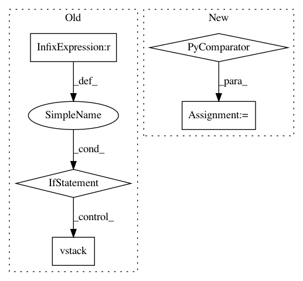

39efccc696a1c20745a52cc50935cdc24f92230d,secuml/core/classif/classifiers/__init__.py,Classifier,_predict_streaming,#Classifier#,146
Before Change
ids.append(instance_id)
row = next(features_iter)
num_rows += 1
if matrix is None:
matrix = [row]
else:
matrix = np.vstack((matrix, row))
if num_rows >= stream_batch:
ids = instances_ids.get_from_ids(ids)
predictions = self._update_streaming_predictions(predictions,
matrix, ids)
After Change
predictions = self._update_streaming_predictions(predictions,
matrix, ids)
if num_remaining > 0:
matrix = np.vstack(tuple(next(features_iter)
for _ in range(num_remaining)))
ids = instances_ids.ids[-num_remaining:]
ids = instances_ids.get_from_ids(ids)
predictions = self._update_streaming_predictions(predictions,
matrix, ids)
In pattern: SUPERPATTERN
Frequency: 3
Non-data size: 5
Instances
Project Name: ANSSI-FR/SecuML
Commit Name: 39efccc696a1c20745a52cc50935cdc24f92230d
Time: 2019-05-09
Author: anael.beaugnon@ssi.gouv.fr
File Name: secuml/core/classif/classifiers/__init__.py
Class Name: Classifier
Method Name: _predict_streaming
Project Name: ContextLab/hypertools
Commit Name: 1cfe4b2736a91865a44d73ff179a52144af8a6ce
Time: 2018-01-22
Author: andrew.heusser@gmail.com
File Name: hypertools/tools/format_data.py
Class Name:
Method Name: format_data
Project Name: ANSSI-FR/SecuML
Commit Name: 39efccc696a1c20745a52cc50935cdc24f92230d
Time: 2019-05-09
Author: anael.beaugnon@ssi.gouv.fr
File Name: secuml/exp/data/features.py
Class Name: FeaturesFromExp
Method Name: get_matrix